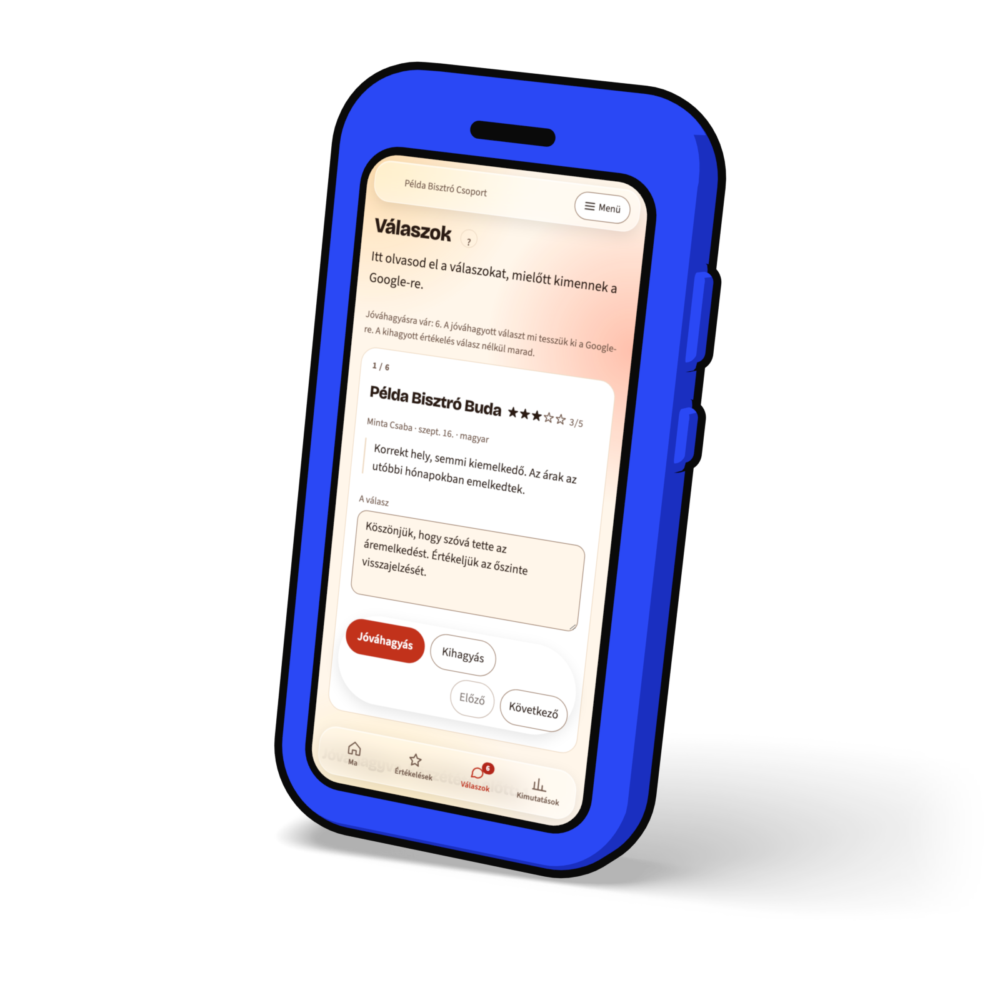
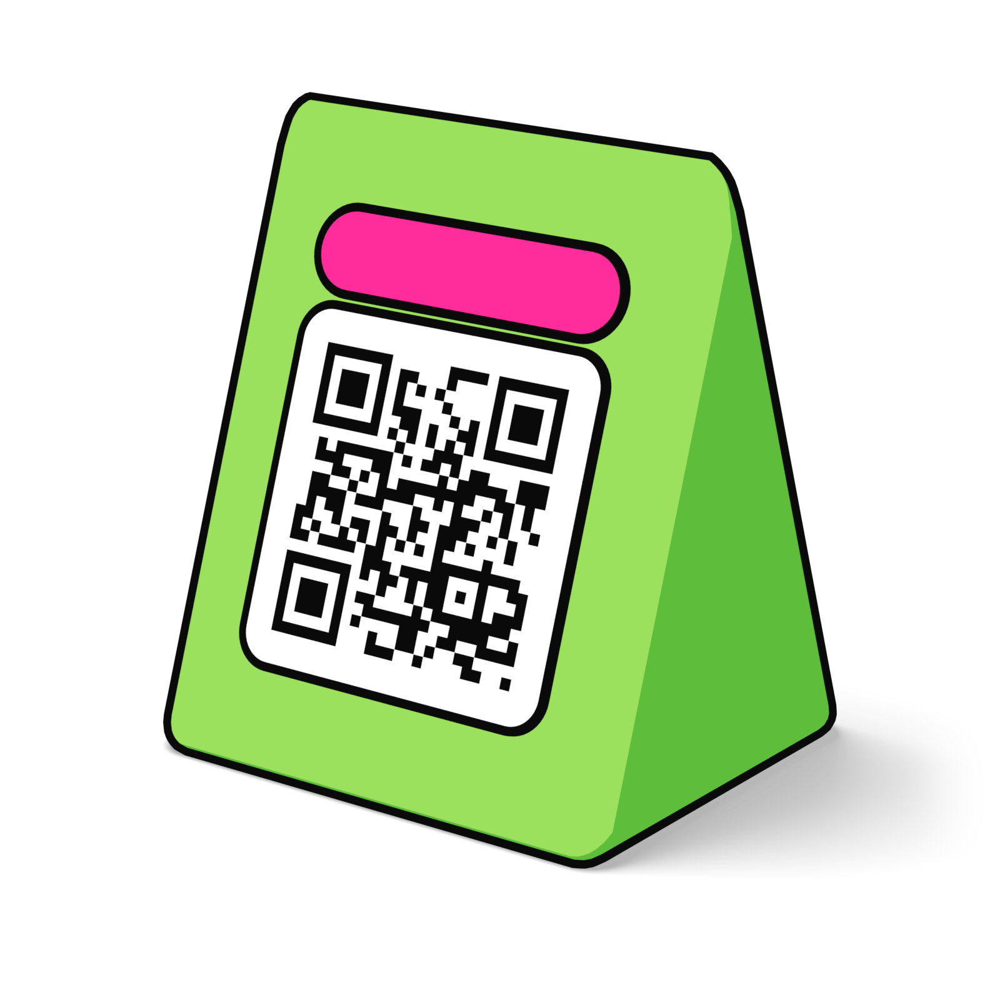

Címbetű
Space Grotesk 700
Címek, számok, gombok, címkék, matricák. A Pop stílus alapértelmezett címbetűje.
Minden értékelés egy helyen.
áéíóöőúüű ÁÉÍÓÖŐÚÜŰ
0123456789 „ ”
Ez a lap a BistroTech arculata képben: színek, betűk, tér, forma, elemek, mozgás, ikonok, rajzok és 3D, egymás alatt. Minden érték a POP-IDENTITY-v1.0.0.md leírásból vagy az általa megnevezett fájlokból jön. Ha a lap és egy kiadott fájl eltér, a fájlnak van igaza.
Az elemek a weboldal saját stíluslapjával jelennek meg, ezért pontosan úgy néznek ki, mint élesben. A színkódok egy kattintással kijelölhetők.
Hangos, vidám és olvasható. Tömör színblokkok, plakátméretű betűk, vastag fekete körvonalak és kemény árnyékok, amelyek sosem mosódnak el, ferdén felragasztott kis matricák, és tárgyak, amelyek vaskos játékoknak látszanak. Olyan legyen, mint egy 2026-os díjazott weboldal, amelyet éttermesek csináltak, és soha ne olyan, mint egy vállalati szoftver vagy egy sablon. Minden blokk egy dolgot mond. A szín hozza az energiát, a szavak és a számok viszik a jelentést, ezért semmit nem mondunk el csak színnel.
Egy blokk, egy gondolat.
Az alapértelmezett színsor neve Citrom. Ugyanezek az értékek adatként a docs/brand/pop-tokens.json, CSS-változóként a docs/brand/pop-tokens.css fájlban vannak.
ink#0a0a0aSzöveg, minden körvonal, minden kemény árnyék.paper#ffffffAz oldal, a kártyák, a szöveg kéken és feketén.muted#555555Másodlagos szöveg, fehéren 7,46:1.yellow#ffe500A jellegzetes blokk, kiemelés, matrica, az aktív fül.pink#ff2d9bBlokk, filcvonal, a negatív csempe.green#9be15dBlokk.cyan#38d6e0Blokk.lilac#a78bfaBlokk.orange#ff7a3dBlokk.blue#2a48f5Az elsődleges gomb és a link színe, blokk fehér szöveggel.pos#00734aPozitív szó vagy szám fehéren.neg#b80f0fNegatív szó vagy szám fehéren.warn#7a5c00Figyelmeztető szó fehéren.tint-pos#c9ffe5A pozitív jelzés alapszíne.tint-neg#ffd9d9A negatív jelzés alapszíne.Minden kártyán a szöveg a saját színében ül a saját alapján. Az arányt a lap a megjelenített színekből számolja ki, a WCAG 2.x képletével.
A Pop stílus színsorai az alkalmazásban (D-048). Mindegyik teljes tokenlistája a docs/design/lab/appearance-2026-09-26/palettes.json fájlban van. A kiemelés a linkek és az elsődleges gomb színe. Az öt világos sor fekete szöveget, fekete körvonalat és fehér kártyát használ. Éjfél az éjszakai sor: a szöveg és a körvonal fehér, a kártyák kemény árnyéka sárga. Automatikus módban a készülékhez igazodik: nappal Citrom, éjjel Éjfél.
#ffffffOldal#2a48f5Kiemelés#ffe500A nap kártyája#ff2d9bJelvényCsempék
#9db4ff#ffe500#7ee8b0#ff2d9b#fff5eeOldal#b83210Kiemelés#ff7a3dA nap kártyája#ff3d81JelvényCsempék
#ffc24a#ffb38a#7ee0b8#ff3d81#f5fbeeOldal#2f6f16Kiemelés#9be15dA nap kártyája#ff8fabJelvényCsempék
#ffe27a#ff8fab#9be15d#ff8a6b#f8f5ffOldal#5b3be8Kiemelés#a78bfaA nap kártyája#ff8ac0JelvényCsempék
#7dd3fc#ff8ac0#86efac#ff7aa2#effbfbOldal#0b6e8aKiemelés#38d6e0A nap kártyája#ff7a6bJelvényCsempék
#ffe08a#5b9dff#7ee8b0#ff7a6b#0a0a0aOldal#161616Kártya#ffe500Kiemelés#ffe500A nap kártyája#ff5cb0JelvényCsempék
#8fa8ff#ffe500#5fe3a1#ff6b8bA 3D-s tárgyak megvilágított oldala pontosan a blokkszín, az árnyékos oldala ugyanannak mélyebb, melegebb tónusa, soha nem szürke.
#ffe500árnyék #ffc414#ff2d9bárnyék #d8147e#9be15dárnyék #5fbd3c#38d6e0árnyék #14a8c3#a78bfaárnyék #7f60ea#ff7a3dárnyék #e6501a#2a48f5árnyék #1a2fc0#ffffffárnyék #dfdcf3Két betűtípus viszi az egészet: a Space Grotesk a címeket, a Source Sans 3 a szöveget. Mindkettő saját tárhelyről jön, woff2-ben, latin és latin-ext szeletre bontva, Arialra méretezett tartalék betűvel (BT Display fallback 93,7%, BT Text fallback 92,18%), hogy az oldal ne ugorjon meg, amikor a betű megérkezik. Harmadik féltől semmi nem töltődik.
Címbetű
Címek, számok, gombok, címkék, matricák. A Pop stílus alapértelmezett címbetűje.
Minden értékelés egy helyen.
áéíóöőúüű ÁÉÍÓÖŐÚÜŰ
0123456789 „ ”
Szövegbetű
400 a szövegben, 600 a kiemelésben, dőlt csak idézett értékelésben.
Minden értékelés egy helyen.
400Minden értékelés egy helyen.
600Minden értékelés egy helyen.
dőlt„A leves langyos volt, és húsz percet vártunk a számlára.”Példa
áéíóöőúüű ÁÉÍÓÖŐÚÜŰ
Minden sor a valódi értékkel jelenik meg, ezért az ablakkal együtt nő és fogy. A „most” érték a mostani ablakszélességen mért méret.
Minden értékelés.
Csomagok
Válasz jóváhagyása
Hogyan indul
Adatkezelési tájékoztató
Napi jelentés
A BistroTech letölti az éttermeid Google-értékeléseit, megírja rájuk a választ, és reggelente elküldi, mi történt tegnap.
Megkeresed az éttermet név szerint. Pár percen belül látod a legutóbbi értékeléseit és az első számokat.
Irány a súgóKérj bemutatótKezdd el ingyen, 14 napig
Minden reggel egy jelentés.
Illusztráció. Az éttermek nevei, a szövegek és a számok kitaláltak. A felépítés a valódi napi jelentésé.
Az alkalmazásban a Pop stílushoz ezek is választhatók. A szöveg mindegyik mellett Source Sans 3 marad.
Bricolage Grotesque
800-as vastagság · betűköz −0,025em
Minden értékelés egy helyen.
áéíóöőúüű ÁÉÍÓÖŐÚÜŰ
Unbounded
700 · betűköz −0,02em · a méret 0,86-szorosa, mert széles
Minden értékelés egy helyen.
áéíóöőúüű ÁÉÍÓÖŐÚÜŰ
Archivo keskeny
75-ös szélesség · 700 és 900 között, az alkalmazásban 800 · betűköz −0,005em
Minden értékelés egy helyen.
áéíóöőúüű ÁÉÍÓÖŐÚÜŰ
Rubik
700 · betűköz −0,015em
Minden értékelés egy helyen.
áéíóöőúüű ÁÉÍÓÖŐÚÜŰ
Az ábra a valódi értékekkel rajzol: a fejléc, a szakasz térköze, az árok és a csempék közti rés akkora, amekkora ezen az oldalon ennél az ablakszélességnél. Ha keskenyebbre vagy szélesebbre húzod az ablakot, az ábra vele változik.
clamp(64px, 8vw, 120px), a záró felhívásnál clamp(80px, 10vw, 136px). Minden szakasz egy tömör színblokk, köztük 2 px fekete vonal.Vastag körvonal, kemény árnyék, négy sarokméret és néhány fok dőlés. Ebből áll minden elem.
2 px fekete a kártyán, a gombon, a chipen, a beviteli mezőn, a matricán és a fejlécen. Az alkalmazás sűrű listasorain 1,5 vagy 2 px.
Tömör fekete, elmosás nélkül, jobbra és lefelé eltolva. Fekete blokkon sárga.
Fekete blokkon az árnyék sárga.
8 px kicsi, 14 px közepes, 18 px kártya, 26 px nagy panel. Kerek vég a chipen és a címkén, és a weboldal gombjain is.
Csak annyi, hogy felragasztottnak látsszon.
A lenyomott gomb beleül az árnyékába: annyit lép jobbra és lefelé, amekkora az árnyéka, az árnyék pedig nullára fogy. A gombnál ez 4 px.
Ahol a mozgás engedett, a gomb rámutatáskor 2 px-t emelkedik felfelé és balra, az árnyéka 2 px-szel nő. A kártya és a csempe kb. −1,4°-ot dől és 3 px-t emelkedik.
Soha a Pop stílusban: elmosás, üveg, színátmenet, puha vetett árnyék.
Hat mozdulat teszi felismerhetővé az arculatot. Egy képernyőn egyszerre csak néhány.
Vagy egy kis színblokk körvonallal és 0,05em árnyékkal, −1,5°-kal elforgatva (.hl), vagy egy vastag filcvonal SVG-ben a szó alatt, 0,15em, kerek végekkel (.mk). Címenként egy, soha több.
Kis, elforgatott címke egy kártyán vagy egy címen. Képernyőnként egy vagy kettő.
Minden szakasz, csempe és kiemelés egy tömör szín. Az oldal blokkok egymásra rakott sora, köztük 2 px fekete vonal.
.blk-yellowfekete szöveg
.blk-pinkfekete szöveg
.blk-greenfekete szöveg
.blk-cyanfekete szöveg
.blk-lilacfekete szöveg
.blk-orangefekete szöveg
.blk-whitefekete szöveg
.blk-bluefehér szöveg
.blk-blackfehér szöveg, sárga árnyék
Példa-értékelések szalagja, mindegyiken „Példa” felirat. Gombbal megállítható, rámutatásra és fókuszra is megáll, csökkentett mozgásnál áll. Csak a weboldalon, az alkalmazásban soha.
PéldákÍgy jönnek az értékelések, minden étteremből egy helyre.
Példa5 csillagPélda Bisztró
„Isteni volt a rántott csirke, és gyorsan kihozták.”
Teszt Anna
Példa2 csillagMinta Étterem
„Húsz percet vártunk az asztalra, pedig foglaltunk.”
Példa Gergő
Példa4 csillagTeszt Kávézó
„Jó a kávé. A sütit legközelebb melegebben kérném.”
Minta Dóra
Példa5 csillagMinta Étterem
„Kedves kiszolgálás, a gyerekeknek is volt menü.”
Példa Réka
Példa1 csillagPélda Bisztró
„Hideg volt a köret, és senki nem kérdezte, milyen volt.”
Teszt Bence
Példa3 csillagTeszt Kávézó
„Rendben volt minden, csak hangos a zene.”
Minta Péter
Példa5 csillagPélda Bisztró
„Lovely goulash and very friendly staff.”
Teszt Emma
Példa4 csillagMinta Étterem
„Gutes Essen, aber etwas laut.”
Minta Lili
Illusztráció. A vendégek, az éttermek és a szövegek kitaláltak.
A lépések számai a kártyájuk szélén ülnek, 1-től 4-ig.
Megadod az e-mail-címed és egy jelszót.
Megkeresed az éttermet név szerint.
A Google cégprofilon kezelőként felveszed a mi fiókunkat.
Összekötöd a Telegramot, és kiválasztod az időpontot.
A fő képen játékszerű 3D-s tárgy, a kisebb képeken lapos, körvonalas rajz. Mindkettő saját részt kapott: 10. Rajzok és 11. 3D.
A nevek a weboldal CSS-éből valók. Az alkalmazás ugyanezeket a formákat használja a saját tokenjeivel.
Négy változat: .btn-blue az elsődleges művelet fehér szöveggel, mellette .btn-yellow, .btn-white és .btn-ink. Mindegyiken 2 px körvonal és 4 px árnyék, lenyomáskor beleül az árnyékába.
.btn-blueAz elsődleges művelet, fehér szöveggel.
.btn-yellowSzínes blokkon a fő felhívás.
.btn-whiteA második lehetőség.
.btn-inkFekete gomb fehér szöveggel.
Ezek valódi gombok: rámutathatsz és megnyomhatod őket, de nem indítanak semmit.
Kezdd el ingyenKérj bemutatót
Kezdd el ingyenKérj bemutatót
Kerek végű, körvonalas, 3 px árnyékkal. Lenyomva fekete alap és fehér szöveg, és beleül az árnyékába.
A kártya papír alapú. A csempe egy kártya blokkszínben, fehér ikonkoronggal és címmel.
Fehér alap, 2 px fekete körvonal, 18 px sarok és 6 px kemény árnyék.
Abban az órában érkezik, amit beállítasz. Telegramon, ha összekötöd, és mindig a fiókodban.
Meghívod a kollégákat, és te döntöd el, ki melyik éttermet látja.
Kérdezhetsz tőle. A saját értékeléseidből válaszol, és megmondja, mennyiből.
Vastag betűs sorok. A nyitott sor feje sárga, a plusz jel 45°-ot fordul.
Nem. Böngészőben megy, telefonon és gépen is. Ha szeretnéd, a telefonod kezdőképernyőjére is felteheted.
Nem. Minden választ te hagysz jóvá. Az automata válasz külön kapcsolható be, és alapból csak a pozitív értékelésekre megy.
Azon a nyelven, amelyen a vendég írt.
A valódi napi jelentés felépítése kitalált éttermekkel, döntött fehér kártyán. A számok összeadódnak: 3 és 1 új értékelés, összesen 4. Mindig „Illusztráció” felirattal.
Minden reggel egy jelentés.
2026. szept. 15., kedd
Példa Bisztró · 3 új · átlag 4,33
5 csillagos:2 4 csillagos:0 3 csillagos:1 2 csillagos:0 1 csillagos:0
Google: 4,6 (1284)
Minta Étterem · 1 új · átlag 2,00
5 csillagos:0 4 csillagos:0 3 csillagos:0 2 csillagos:1 1 csillagos:0
Google: 4,4 (612)
Teszt Kávézó · 0 új · Google: 4,7 (238)
Σ Összesen: 4 új értékelés
5 csillagos:2 4 csillagos:0 3 csillagos:1 2 csillagos:1 1 csillagos:0
Megválaszolatlan negatívok · 1
Minta Étterem · 2 csillag · szept. 12.
„A leves langyos volt, és húsz percet vártunk a számlára.”
7:45
Telefonkeret a valódi lejátszóval, sárga kártyán. A fejezetek a feliratfájlból jönnek, és a gombjuk odaugrik a videóban.
A videó készül.
Videó a fiókból0:39
Így nézed át és hagyod jóvá a kész válaszokat.
Ugrás a lépéshez
Csak akkor mozog bármi, ha nem kértél kevesebb mozgást a készülékeden (prefers-reduced-motion: no-preference). Ha kértél, minden áll, és semmi nem tűnik el.
Ha a készülékeden csökkentett mozgást kértél, a minták állnak.
.12s ease az elmozdulásra, az árnyékra és a színre.
.22s cubic-bezier(.2, .9, .3, 1.3): kis túllövés, ettől játékos.
.5s cubic-bezier(.2, 1.6, .4, 1), 0,35 s késleltetéssel, amikor az oldal betölt.
64s linear, körbe. Rámutatásra, fókuszra és gombbal megáll.
A szalag a 6. részben fut.
8s linear. Ez a sáv csökkentett mozgásnál is fogy, mert azt mutatja, meddig vonhatod vissza a jóváhagyást.
Az alkalmazásban semmi nem ismétlődik körbe.
Beágyazott SVG, 24 px-es rácson. Nincs ikonbetűtípus, nincs máshonnan betöltött ikonkönyvtár, és nincs emoji.
Csempén, fehér korongban
TovábbGombban, 1,75 px
Szöveg mellett, a szöveg színében
Mind a harmincöt, a sprite.html-ből, a nevükkel.
g-chartg-calg-ping-warng-checkg-starg-star-oi-arrowi-backi-menui-closei-plusi-pausei-playi-clocki-belli-swapi-listi-usersi-useri-keyi-aski-linki-phonei-tagi-infoi-undoi-searchi-videoi-kbdi-maili-bulbi-doci-cupi-bagLapos, körvonalas rajzok a kisebb képekhez. Egy rajz egy tárgy, legfeljebb egy apró kiegészítővel: egy matricával, egy pipával vagy egy órával. Mind a tizenkettő ugyanabból a receptből készül: docs/design/lab/illustration-2026-09-26/tools/build_svg.py.
Fehér alapon
Sárga blokkon: ugyanaz a tizenkét rajz
Kék blokkon: ugyanaz a tizenkét rajz
Kék alapon a körvonal és az árnyék fekete marad, mint a weboldal kártyáin (3,15:1, egy rajznak ennyi elég). Fehérre is váltható, az 6,28:1.
Fekete alapon: ugyanaz a tizenkét rajz
Ugyanazok a rajzok: a körvonal és az árnyék fehér, mert a doboz szövegszíne fehér. A testek mindig színesek, fehér csak betét lehet, különben itt összefolyna a saját fehér árnyékával.
Beágyazva a rajz a környező szöveg színét veszi át: az oldal elején egyszer a rajzok, utána bárhol egy sor.
<svg class='ill' viewBox='0 0 240 240' aria-hidden='true'><use href='#ill-buborek'/></svg>
.blk-black .ill { color: #fff; } /* sötét alapon fehér körvonal és árnyék */Vaskos, játékszerű tárgyak a fő képekhez, Blenderben modellezve és parancssorból renderelve. Mind a négy tárgy és a forgó videó ugyanazzal a recepttel készült.



Ezeket nem rajzoljuk le, példának sem, ezért ebben a részben nincs kép.
A Pop hangos képet ad. A mondatok nyugodtak maradnak.
Az arculat része, nem utólagos ellenőrzőlista.
Próbáld ki a Tab billentyűvel: minden gomb és link így mutatja, hol jársz.
{kind=link}
{kind=link}
{kind=link}
{kind=link}
{kind=link}
{kind=link}
{kind=link}
{kind=link}
{kind=link}
{kind=link}
{kind=link}
{kind=link}